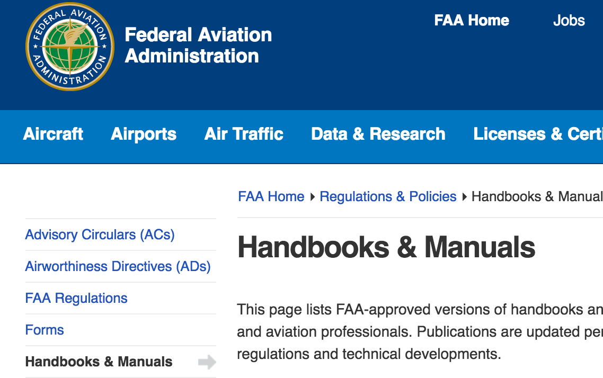

FAA sUAS Online Registration
The FAA sUAS (small Unmanned Aerial System) Online Registration system is
used to register your drone with the US federal government. After registering,
the drone will be your responsibility when it is in the air.
You must register if all of the following apply:
- Your drone weighs more than 0.55 pounds.
- You plan on flying the drone in the United States recreationally or commercially.
You need:
- An email address
- Credit or debit card (for $5 registration fee)
- Physical address
- Permanent marker or label (to mark the drone)
1 Create an FAA Account
Click the link above to go the to FAA sUAS Registration page, then
create an account by filling in your username and password.
2 Confirm Your Email
Check the email that you used to register and click the confirmation
link inside to continue with registration.
3 Agree to the Site Notice / Login
Carefully read the Privacy Policy and Privacy Act Notice linked to
from within the dialog box that appears. When finished, hit "Agree"
and log in with the email and password you just created.
4 Select Your Account Type
5 Complete Your Profile / Checkout
Fill in the personal information on the following page
and select "Continue to Checkout" when done. Then, enter
your credit card information to pay the $5 registration fee.
6 Print Certificate / Mark Drone
Print the certificate provided on the following page and keep
it with you when you fly. Use a permanent marker to label your
drone with the registration number on the certificate.
That's It!
Your drone is now registered online with the FAA for personal or
commercial use! Depending on your circumstances, additional registration
steps may be required. Click "Back to Checklist" on the right to see what
else you need to do before you fly, or hit "Next Step" to begin N-number
registration now.
Back to Checklist
Next Step: N-number Registration
Federal N-number Paper Registration
N-number Paper Registration is used to register vehicles that
don't fit into the qualifications sUAS (small Unmanned
Aerial Systems). If your drone is large, operates outside the US,
or is operated by a voter trustee, then you will need to use
paper registration to legally fly your drone recreationally or
commercially.
You need this if at least one of the following applies:
- Your drone weighs more than 55 pounds.
- You plan on flying in other countries in North America.
- You are a voter trustee rather than a full US citizen.
You need:
- A credit or debit card ($10 N-number registration fee)
- A mailing address, physical address, and phone number
- Printer access
- The drone's model and serial number
- An envelope and stamps (to mail the application)
1 Reserve your N-Number
Use the link above to access the N-Number Reservation form, then
fill out the form to request an N-Number for use with your drone.
Click "Proceed with Request" and enter your credit card information
to receive an N-Number in your name. Make sure to save this N-number!
2 Download and Print the Registration Form
Use the link above to download and print the Aircraft Registration
form. Read through the Privacy Act Statement and make sure that you
agree to each clause before filling out.
3 Fill out Personal Information
Use a blue or black pen and fill out your personal information in page 2
of the form. Make sure to use the US Registration Number that you received
from the N-Number request form in step 1 above.
4 Sign, Date, and Mail
Sign and date the document and mail the original (not a copy)
to the address on the left. No check is required in this filing.
That's It!
In 2-3 weeks, you should get a letter back to your mailing address
with the confirmation of registration. Depending on your circumstances, additional registration
steps may be required. Click "Back to Checklist" on the right to see what
else you need to do before you fly, or hit "Next Step" to begin Section
333 Exemption now.
Back to Checklist
Next Step: Section 333 Exemption
FAA Section 333 Exemption
Section 333 of the FAA Guidelines states that an unmanned aerial vehicle
cannot be used commercially. However, the government regularly and predictably
grants exemptions to this section to those who file petitions online. You'll need
to file a petition and be granted an exception before you can fly large drones
or commercial drones in North America.
You need this if at least one of the following applies:
- You plan on flying the drone on behalf of a company.
- Your drone weighs more than 55 pounds.
- You plan on flying in other countries in North America.
- You are a voter trustee rather than a full US citizen.
You need:
- Internet access.
- Your mailing address and company information.
- Make, model, and serial number of your drone.
1 Review Petition Guidelines
Use the Guidelines link above to see the general guidelines for
submitting a petition to be exempt from Section 333.
2 File via the Public Docket System
Use the Public Docket link above to enter the Public Docket specifically
for Section 333 of the FAA guidelines. Fill out your mailing address,
business address, and a short outline of what you plan to do with your drone.
Include make, model, and serial number of the drone. There is no fee for
filing this exemption.
That's It!
Within 120 days, you should receive a letter with your Section 333 exemption
that allows you to fly commercially under 400 feet in North America. Depending on your circumstances, additional registration
steps may be required. Click "Back to Checklist" on the right to see what
else you need to do before you fly, or hit "Next Step" to begin the Pilot License
process now.
Back to Checklist
Next Step: FAA Pilot License
FAA Pilot License
Unfortunately, flying large drones or flying commercially now
requires a pilot's license through the FAA. Fortunately, obtaining
a private license only requires a few weeks of classes, a single
examination, and allows you to fly above 400 feet and in all of North America.
You need this if at least one of the following applies:
- You plan on flying the drone on behalf of a company.
- Your drone weighs more than 55 pounds.
- You plan on flying in other countries in North America.
- You are a voter trustee rather than a full US citizen.
- You plan on flying above 400 feet
You need:
- Time and money to attend Pilot School.
- Regular access to your drone.
1 Find a Pilot School
Use the link above to access the Pilot School Locator
and enter your city to find FAA-approved Pilot Schools.
2 Contact and Enroll
Once you've entered your location information, a list of
schools will populate. Use the contact information to do
further research and enroll in a particular school.
3 Attend the Flight School Program
Once you've enrolled, attend the program and study the additional
materials provided in the link above (FAA Handbooks and Manuals).
Ensure that you're comfortable with a vast majority of the material
before continuing, even if it's not applicable to drones; the theory
portion of the pilot test is not specialized to your vehicle type.

4 Locate a Pilot Tester
Once you've completed the program, use the link above
(FAA Pilot Tester Locator) to locate a pilot examiner. Make
sure to select "PE - Private Pilot Examiner" under the Designee
Type dropdown menu.
5 Complete the Pilot Examination
Contact an appropriate examiner and ask to complete the Private Pilot
examination. After completing the examination, you will receive a letter
in 4-6 weeks from the FAA office including your pilot's license.
That's It!
Now that you are a licensed pilot, you are given much more freedom with
drone flying. You can fly above 400 feet, fly commercially, and
fly within the US even if you aren't a citizen. Depending on your circumstances,
you may have to register your drone or file for further exemptions before it's
legal to fly. Click "Back to Checklist" on the right to see what
else you need to do before you fly, or hit "Next Step" to begin the
non-citizen certificate of authorization now.
Back to Checklist
Next Step: Non-Citizen CoA
Non-Citizen Certificate of Authorization
If you are not a citizen of the United States or a trustee
voter, then you are required to obtain a non-citizen certificate
of authorization before flying recreationally or commercially.
Use the steps below to file for a certificate.
You need this if:
- You are not a US citizen or trustee voter.
You need:
- An email address
- The make, model, and serial number of your drone.
- A scanned copy of your immigration documents or visa.
1 Request a CoA Account
First, use the link above (Account Request Email) to email the UAS
(Unmanned Aerial System) Office and request an account. Be sure to
include the make, model, and serial number of your drone as well as
the grounds under which you are currently living in the United States.
Include a scanned copy of your immigration documents or visa.
2 Access the CoA Request System
In a few weeks, you should receive an email with your login credentials.
Use the second link above (UAS CoA Online System) to access the portal.
Accept the usage agreement, then log in with your provided credentials.
Fill out your personal information on the next page, then hit "Submit."
That's It!
In 2-3 weeks, you should receive an email response with your Certificate of
Authorization, allowing you to fly drones within the US as a non-citizen.
Keep this document with you whenever you operate or carry the drone.
Depending on your circumstances, additional registration
steps may be required. Click "Back to Checklist" on the right to see what
else you need to do before you fly.